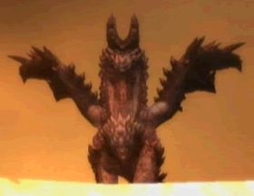

煌黑龍
出自多玩《怪物獵人P3》數據庫
|
| |
| 古龍種：峯山龍 - 煌黑龍 - 嵐龍 |

|  |
|
基本抗性（戰前必讀）
|
|
|
| |||||||
| 火 | 水 | 雷 | 冰 | 龍 | |||||
○ | × | × | ◎ | 頸 | |||||
※屬性相剋說明：◎＞○＞△＞×
※戰鬥前建議準備道具：
消除果（用以解除煌黑龍部分攻擊帶來的屬性下降狀態）
※屬性相剋上一行是煌黑龍的赤黑(火&龍)狀態，下一行是煌黑龍的青白(雷&冰)狀態。
肉質(青白狀態)
| 部位 | 斬擊 | 打擊 | 射擊 | 火 | 水 | 雷 | 冰 | 龍 | 氣絕 | 硬直 |
| 頭 | 60 | 65 | 60 | 0 (20) | 15 | 5 (0) | 20 (0) | 5 (30) | 100 | 440 |
| 頸 | 40 | 35 | 40 (45) | 0 (15) | 10 | 5 (0) | 15 (0) | 5 (20) | 0 | 440 |
| 身體 | 35 | 30 | 20 | 0 (15) | 10 | 5 (0) | 15 (0) | 5 (20) | 0 | 660 |
| 翼 | 21 (25) | 21 (25) | 10 (15) | 0 (15) | 5 | 5 (0) | 10 (0) | 5 (10) | 0 | 左264/右264 |
| 四肢 | 25 (38) | 25 (38) | 20 (35) | 0 (15) | 10 | 5 (0) | 15 (0) | 5 (20) | 0 | 左396/右396 |
| 尾巴 | 30 | 30 | 44 | 0 (15) | 5 (10) | 5 (0) | 10 (0) | 5 (20) | 0 | 396 |
※括號內的數值代表，煌黑龍變成青白狀態時的肉質變化。
屬性攻擊效果
| 屬性 | 毒 | 麻痹 | 睡眠 | 氣絕 | 減氣 |
| 耐性值初期 | 180 | 250 | 250 | 144 | - |
| 耐性值上升(最大) | 300 (1380) | 300 (1450) | 300 (1450) | 144 (720) | - |
| 積累值減少 | 5/10秒 | 5/10秒 | 5/10秒 | 5/10秒 | - |
| 效果持續時間 | 30秒 | 15秒 | 60秒 | 15秒 | - |
| 傷害 | 150 | - | - | - | - |
道具效果（陷阱效果）
| 道具名 | 效果 | 備註 |
| 落穴 | × | 無效 |
| 麻痹陷阱 | × | 無效 |
| 閃光彈 | ○ | 初回15秒 → 2回10秒 → 3回開始5秒 |
| 音爆彈 | × | 無效 |
| 糞球 | × | 無效 |
| 肉類 | × | 無效 |
剝取·掉落物品
| 部位 | 回數 | 村/集會浴場下位 掉率 | 集會浴場下位 掉率 | 條件 |
| 本體 | 未知 | 下位無此怪物 | 煌黑龍的堅逆殼 33% 煌黑龍的逆鱗 29% 煌黑龍的尖爪 17% 破碎的天角 10% 古龍之血 8% 琉璃色的龍玉 4% | |
| 尾巴 | 未知 | 下位無此怪物 | 煌黑龍的尾巴 60% 煌黑龍的逆鱗 36% 琉璃色的龍玉 4% |
部位破壞報酬
| 部位 | 村/集會浴場下位 掉率 | 集會浴場上位 掉率 | 破壞條件 |
| 角 | 下位無此怪物 | 破碎的天角*1 50% 貫天之角*1 40% 煌黑龍的逆鱗*1 10% | |
| 爪 | 下位無此怪物 | 煌黑龍的尖爪*1 52% 煌黑龍的逆鱗*1 33% 煌黑龍的尖爪*2 10% 煌黑龍的逆鱗*2 5% | |
| 翼 | 下位無此怪物 | 煌黑龍的翼膜*1 53% 煌黑龍的堅逆殼*1 30% 煌黑龍的逆鱗*1 17% |
捕獲報酬
※本怪物不可捕獲
出現地點
|
種類 |
任務名稱 |
內容 |
|
煌黒龍アルバトリオン |
討伐一頭 煌黑龍 |
攻擊方式【赤黑狀態】
| 攻擊方式 | 備註 |
| 龍車 | 龍屬性突進攻擊，注意有時會預測獵人方向進行突進 |
| 噴火 | 向前噴出一顆火球，落地后發生炎龍捲，燃燒異常附加 |
| 后躍噴火 | 后躍同時向地面，噴出一顆火球，落地后發生炎龍捲，燃燒異常附加；落地後身體也存在傷害判定 |
| 龍爪 | 朝獵人揮出龍爪攻擊，龍屬性附加，尾部存在擦傷判定 |
| 角帶電 | 晃動頭后使角發光帶電 |
| 后躍急襲 | 后躍到空中后飛撲下來攻擊獵人，到地面后還會在身體兩側的地面噴出熔巖 |
| 2連角頂 | 左右依次用角頂兩次 |
| 頭叩 | 稍支起身體后壓下來的同時用頭叩擊 |
| 連續甩尾 | 身後左右連續甩2次尾 |
| 大回轉 | 迴轉全身攻擊后升空一小段，然後落下 |
| 咆哮【大】 | 發現獵人或怒時使用的威嚇攻擊，屬於高吼 |
攻擊方式【青白狀態】
| 攻擊方式 | 備註 |
| 大回轉 | 旋轉全身攻擊后升到空中，進入低空狀態 |
| 雷爪 | 低空狀態時朝地面使用雷爪攻擊，可以連續3次，感電異常附加 |
| 超滑翔 | 全身帶電，以極快的速度使用滑翔攻擊，附帶龍風壓，感電異常附加 |
| 落雷（空） | 低空狀態時，朝獵人所在處依次落下三道雷光 |
| 冰柱 | 低空狀態時，朝地面同時噴出幾塊冰柱攻擊，凍結異常附加，並能作為障礙物存在於地面一段時間 |
| 雪柱橫掃 | 低空狀態時，一邊前進一邊左右橫掃噴射雪柱，凍結&雪人異常附加 |
| 迴轉甩尾（空） | 低空狀態時迴轉身體用尾巴攻擊獵人 |
| 落雷（地） | 再地面時使用落雷攻擊，分前方落雷和大範圍內落雷 |
| 龍車 | 注意有時會預測獵人方向進行突進 |
| 龍爪 | 朝獵人揮出龍爪攻擊，尾部存在擦傷判定 |
| 后躍急襲 | 后躍到空中后飛撲下來攻擊獵人 |
| 2連角頂 | 左右依次用角頂兩次 |
| 頭叩 | 稍支起身體后壓下來的同時用頭叩擊 |
| 連續甩尾 | 身後左右連續甩2次尾 |
攻略·視訊
| 攻略心得 | 視訊 |
|
| |
| 古龍種：峯山龍 - 煌黑龍 - 嵐龍 |